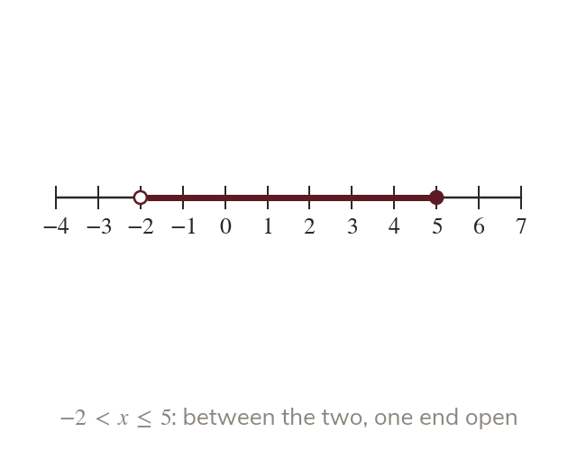
Two conditions at once
A double inequality like states two conditions at once. Read it from outwards.
A double inequality such as states two conditions at once. It is read from outwards: is greater than and less than or equal to
Many real limits come in pairs: a ride might be for people at least cm tall but under cm. Today you write, draw and read inequalities with two boundaries.
Work down the page at your own pace. Write every answer in your book first, then click to check it.
Read each card, then follow the worked examples one step at a time.

A double inequality like states two conditions at once. Read it from outwards.
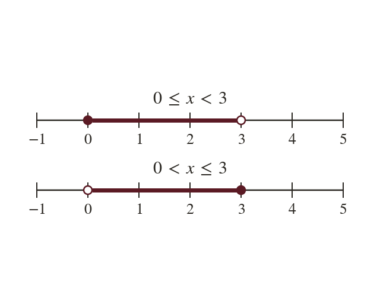
Each end's circle comes from the symbol beside it. Use an open circle for < and a filled circle for ≤. The range between has no arrows.
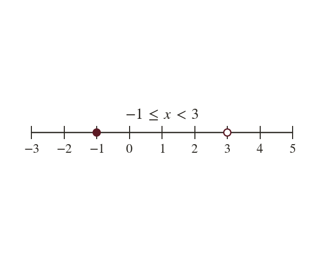
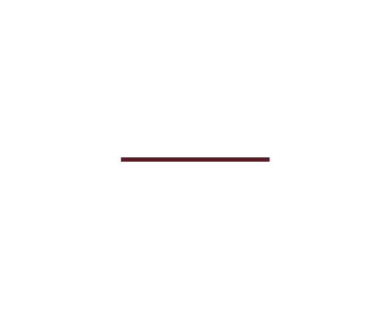
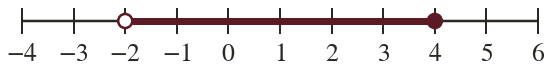
Pick an answer. If it's wrong, the feedback tells you which mistake it was.
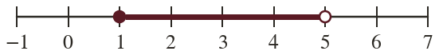
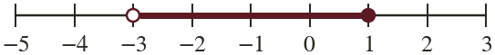
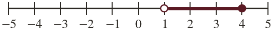
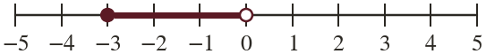
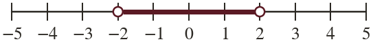
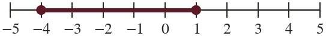
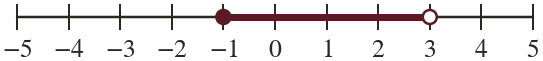
Read each card, then follow the worked examples one step at a time.
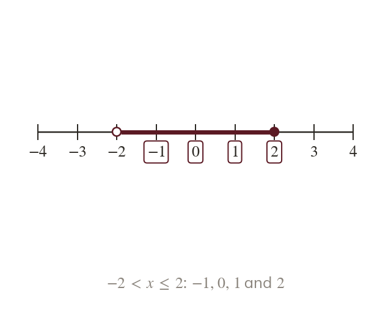
The integers in a double inequality lie between its two bounds. A bound itself is listed only when its own symbol includes it.
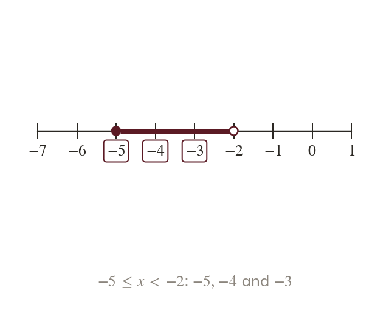
With negative bounds, count up from the lower bound. Listing the integers is safer than subtracting the bounds.
Pick an answer. If it's wrong, the feedback tells you which mistake it was.
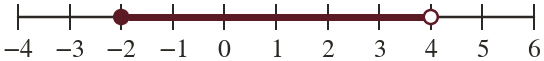
Finished? Next lesson: 7.15.3 Solving Inequalities.
For each skill, tap the one that is true for you today. Your Revise pages start with anything you mark Not yet.
Your ratings are saved on this device only.
Log in, then search for a code to practise that skill.
Videos, worksheets and more on each part of this lesson.